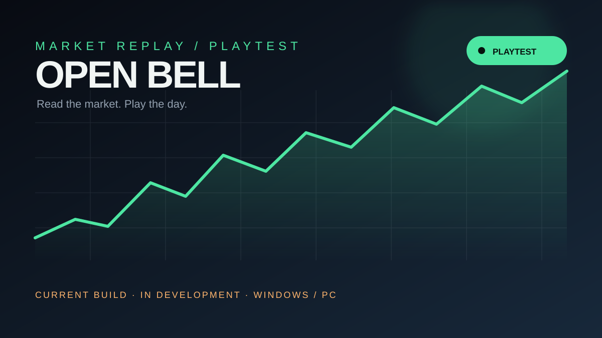

Trade
買入、賣出、放空、回補，使用數量或資金百分比建立自己的節奏。
MARKET REPLAY / OPEN BELL
一款把交易、回放與生涯選擇放在同一張桌上的模擬遊戲。選擇市場，推進每一根 K 線，留下自己的決策紀錄。
ABOUT OPEN BELL
Open Bell 不是即時投資工具，而是一款以決策、節奏與回放為核心的交易模擬遊戲。你可以在安全的遊戲世界裡試錯、觀察，再重新走一次。
THE LOOP
從第一筆下單到最後一次復盤，Open Bell 把市場變成一段可以反覆閱讀的旅程。
買入、賣出、放空、回補，使用數量或資金百分比建立自己的節奏。
播放、暫停、單步與 0.5x 到 4x 倍速，重新走過每一根 K 線。
選擇職場或散戶人生，移動、工作、研究、管理資金與生活。
IN-GAME SCREENS
目前頁面上的桌面與手機畫面是以 HTML/CSS 製作的介面示意；儲存庫尚未提供實機截圖。實際畫面將在收到遊戲截圖後更新。
SIX WORLDS
從熟悉的股票到高波動的加密市場，每個市場都有不同的節奏與風險。
US
常規時段、財報與隔夜跳空。用回放看開盤那一段怎麼走完。

GET OPEN BELL
目前可玩試玩版 · 開發中目前版本仍在開發中，內容、平衡與介面都可能變動；這不是最終版本。
試玩版狀態：Windows / PC 優先 · 行動版仍為測試階段 · 請以開發日誌為準
DEV LOG